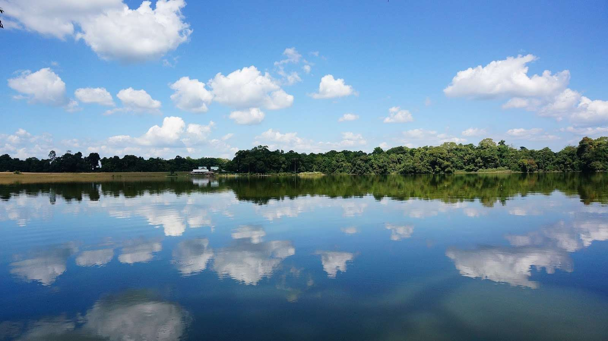
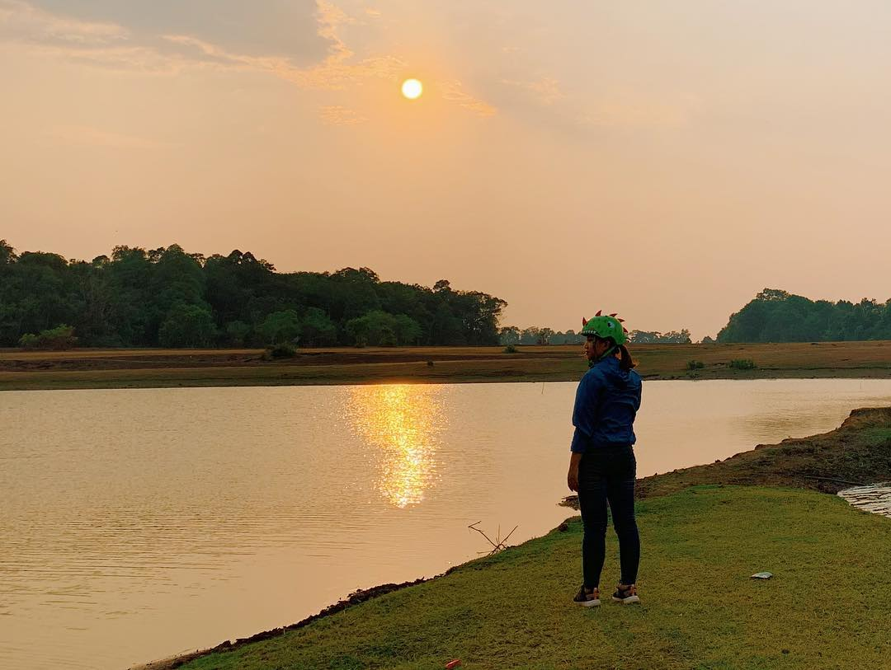
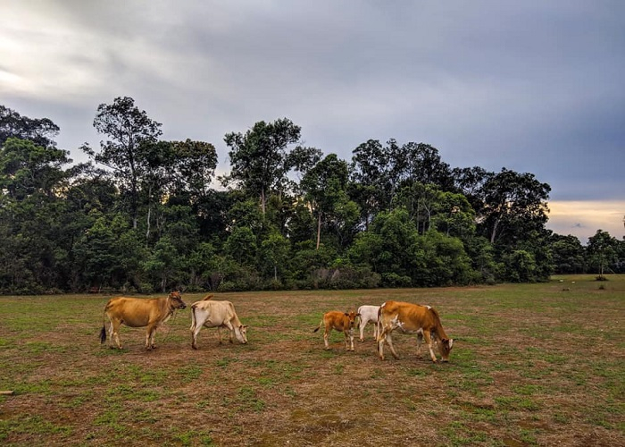
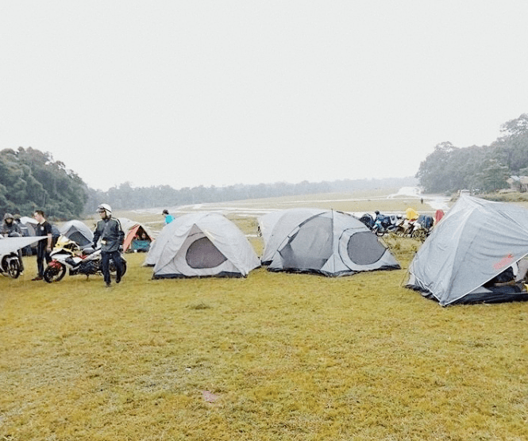

Chưa có nhiều du khách, tour du lịch nên thiên nhiên và con người Bình Phước vẫn đẹp, nguyên sơ và thú vị. Và trảnh cỏ Bù Lạch là một địa chỉ như thế đó. Nằm ở huyền Bù Đăng trảng cỏ được bao bọc bởi khu rừng nguyên sinh và một lòng hồ rộng lớn. Trảng cỏ thanh bình và tuyệt đẹp cùng hoa, chim muông và thảm cỏ trải dài vô tận.
Ghé thăm nơi đây vào buổi hoàng hôn, bạn sẽ nghe được hơi thở của thiên nhiên, hòa vào không gian cực kỳ bình yên này. Nhớ là phải ghé nhà rông, trải nghiệm cuộc sống người địa phương và thưởng thức món cá lóc nướng thơm lừng và món gà rừng mê ly nhé!
 Trảng cỏ Bù Lạch cũng là địa điểm du lịch Bình Phước lý tưởng để bạn cắm trại, qua đêm, chill cùng bạn bè và tiệc nướng BBQ bên bờ hồ.
Nếu xuất phát từ Sài Gòn, bạn chạy thẳng hướng ngã tư Sở Sao rồi rẽ quốc lộ 14, đi thẳng về thị trấn Đức Phong, rồi rẽ phải đến con đèo dốc nhỏ trải nhựa tầm 12km là đặt chân tới Bù Lạch rồi đó nhen.